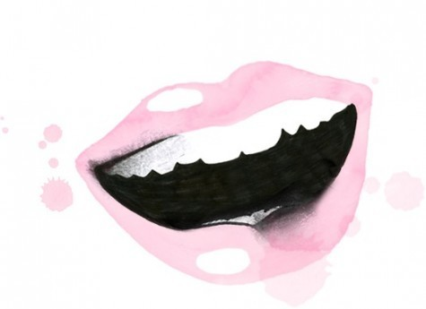

Tre roliga skämt från Göteborg

Här nedanför ser ni skämten i en rangordnad lista:
Vad kallas en skilsmässa i Göteborg?
Svar:
Päron Splitt
Vem är Sveriges mest jämställda man?
Svar:
Hen-rik
I vilken stad kör bilarna fortast?
Svar:
Gaza
Tack!